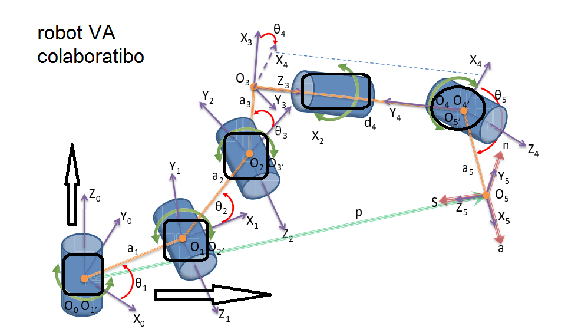

En este contexto, la empresa Villa Automation SAC con sede en el departamento de Ayacucho ha desarrollado un robot colaborativo terrestre orientado inicialmente a la asistencia en entornos industriales, agrícolas y minería, el cual presenta un potencial significativo de transferencia tecnológica hacia el sector militar y sistemas de defensa
Por tanto, el presente proyecto busca modelar, diseñar y e implementar el robot colaborativo de Villa Automation en el contexto militar, evaluando su adaptación a requerimientos de defensa, su interoperabilidad con sistemas existentes y su contribución al fortalecimiento tecnológico nacional e investigación nacional del Perú. Asimismo, el desarrollo de robots colaborativos hace posible interactuar de manera segura y adaptativa con operadores humanos que constituye un área de creciente interés en la ingeniería militar. Los avances en percepción, reconocimiento mediante la aplicación de la inteligencia artificial y control autónomo han permitido crear plataformas que aprenden y se adaptan al entorno.
Finalmente, la presente investigación se enmarca en la tendencia global hacia sistemas autónomos colaborativos que complementen las capacidades humanas en misiones críticas de seguridad y defensa.
2.3. Módulo de control del brazo manipulador
El módulo de control del brazo manipulador es un sistema jerárquico representado
por niveles operacionales. Su función principal es gobernar el movimiento,
posicionamiento y orientación del efector final en el espacio tridimensional.
Supongamos un punto P(x, y, z) que rota un ángulo θ
alrededor del eje Z para alcanzar un determinado objeto.
Esta rotación mantiene fija la coordenada z, mientras que
x e y se transforman en el plano XY.
Rotación de un punto en el plano XY
x′ = x cos(θ) − y sin(θ)
y′ = x sin(θ) + y cos(θ)
z′ = z

En forma matricial:
[ x′ ] [ cosθ −sinθ 0 ] [ x ]
[ y′ ] = [ sinθ cosθ 0 ] [ y ]
[ z′ ] [ 0 0 1 ] [ z ]
Por lo tanto, la matriz de rotación respecto al eje Z se define como:
Rotz(θ) =
[ cosθ −sinθ 0
sinθ cosθ 0
0 0 1 ]
De forma análoga, la rotación alrededor del eje Y está dada por:
Roty(θ) =
[ cosθ 0 sinθ
0 1 0
−sinθ 0 cosθ ]
Posición base del brazo manipulador
P₀ =
[ 0
0
O₀ ]
Funciones del algoritmo de control de trayectoria
- Modelos cinemáticos directos e inversos del brazo manipulador.
- Algoritmos de posicionamiento y rotación de herramientas.
- Control de la mano manipuladora en coordenadas cartesianas.
- Generación de trayectorias rectilíneas en el espacio 3D.
- Movimiento con perfiles de velocidad trapezoidal.
Modelado cinemático usando Denavit–Hartenberg
Usando el método de Denavit–Hartenberg (D–H), se define un sistema de referencia
Si para cada eslabón del manipulador.
Las longitudes ai se consideran constantes y la
posición de cada articulación se obtiene acumulando transformaciones.
p⃗₁ = p⃗₀ + Rotz(θ₁) [ a₁ 0 0 ]ᵀ
p⃗₂ = p⃗₁ + Rotz(θ₁) Roty(θ₂) [ a₂ 0 0 ]ᵀ
p⃗₃ = p⃗₂ + Rotz(θ₁) Roty(θ₂) Roty(θ₃) [ a₃ 0 0 ]ᵀ
p⃗₄ = p⃗₃ + Rotz(θ₁) Roty(θ₂) Roty(θ₃) Roty(θ₄) [ a₄ 0 0 ]ᵀ
p⃗₅ = p⃗₄ + Rotz(θ₁) Roty(θ₂) Roty(θ₃) Roty(θ₄) Roty(θ₅) [ a₅ 0 0 ]ᵀ
p⃗₆ = p⃗₅ + Rotz(θ₁) Roty(θ₂) Roty(θ₃) Roty(θ₄) Roty(θ₅) Roty(θ₆) [ a₆ 0 0 ]ᵀ
Modelo dinámico del sistema
El comportamiento dinámico del brazo manipulador puede representarse mediante
una ecuación de estado continua:
ẋ(t) = f(x(t), u(t))
y(t) = g(x(t), u(t))
donde x(t) representa el vector de estados del brazo manipulador,
u(t) el vector de entradas de control y y(t)
las salidas del sistema, asociadas a la posición y orientación del efector final.
Este modelo permite diseñar estrategias de control para que el brazo alcance
un objeto de forma precisa, estable y segura en entornos reales de operación.